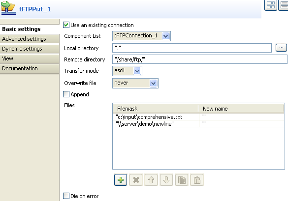

Scenario: Putting files on a remote FTP server
- This scenario creates a single-component job which puts the files defined on a remote server.
- Click and drop a tFTP component onto the design workspace.
- Click on Properties tab, to define the tFTP component parameters:

- Fill in the Host IP address, the listening Port number, as well as the connection details.
- Fill in the local directory details unless you fill it directly in the different filemasks.
- Fill the details of the remote server directory.
- Select the action to be carried out, in this usecase, we'll perform a Put action.
- Right-click in the Files area, to add new lines and fill in the filemasks of all files to be copied onto the remote directory.
- Click on Run Job tab and execute the job.
- Files defined in the Filemask are copied on the remote server.